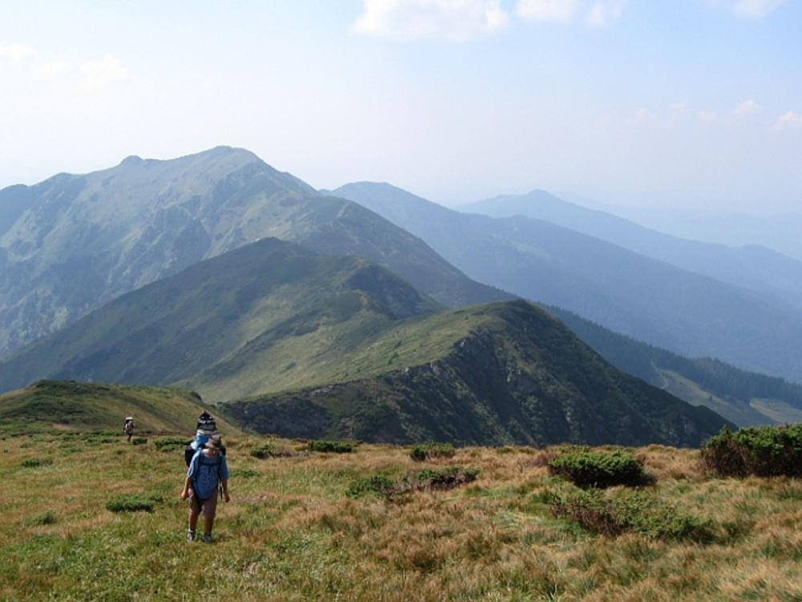
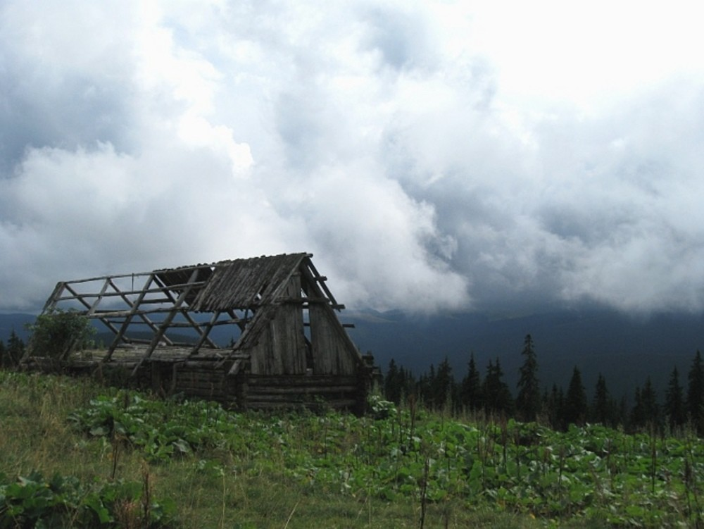
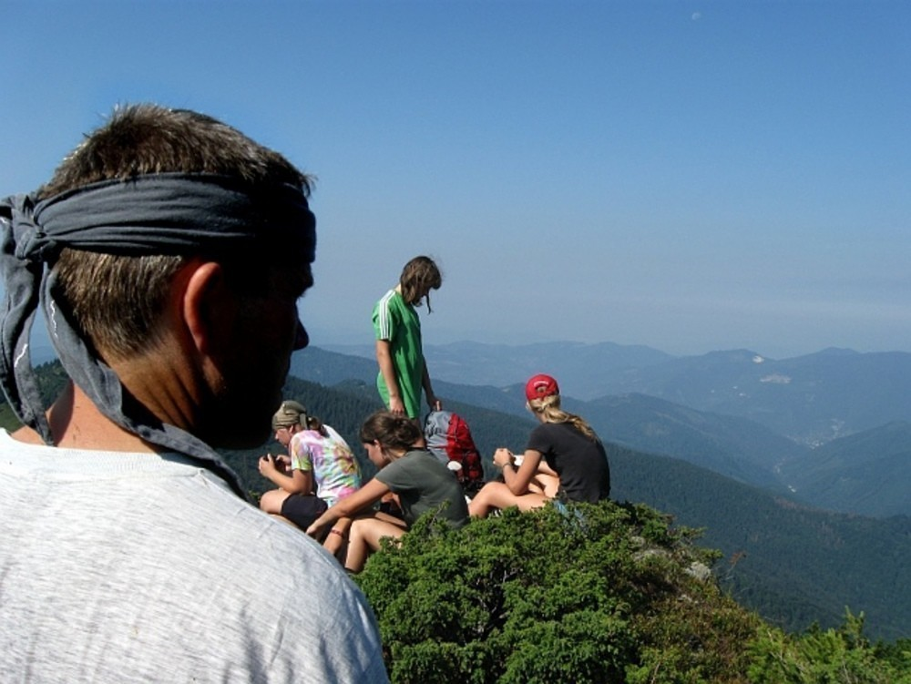
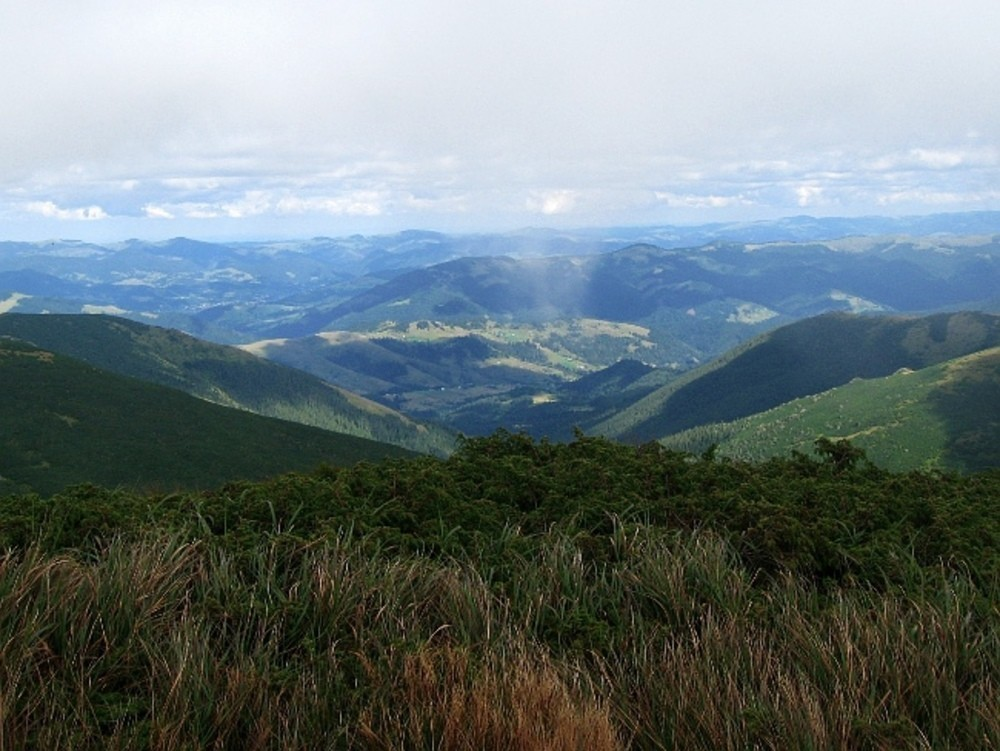
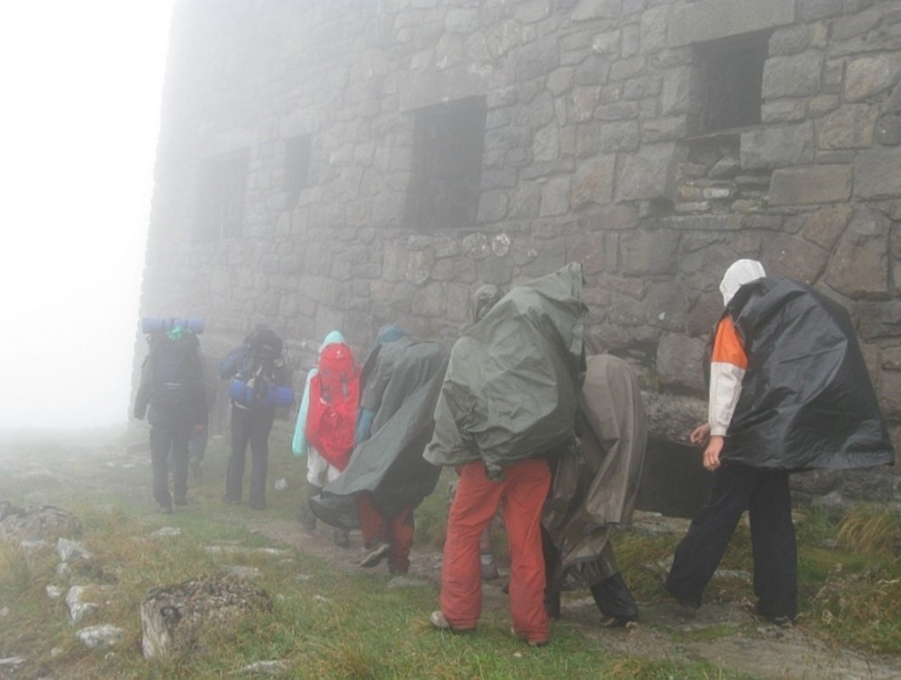

Je to už pár let, co jsme s Tchoříky v létě navštívili Podkarpatskou Rus. Výlet to byl nezapomenutelný a co víc, vznikly tam také spousty fotek. Abyste se nemuseli probírat všemi, strýček Sam, známý bylinkář ze Šumavy, pro vás vybral ty nejlepší.
Pokud vás zajímá, jak jsme se tenkrát na Ukrajině měli, můžete si přečíst buď můj článek nebo pohled očima Jáni.
    kategorie „Článek“, Na Ukrajinu? Prý jsme blázni., Na cesty s jistotou - SPOT Satellite Messenger, Poznámky ze země sluncem spálené, Byl jsem v Tatrách, zapomenout se nedá…, Goldbrunn 2011 - po stopách pašeráka, Z Jizery, Nocležiště, Zelenáči na mistrovství, 40 hodin z telegrafu, A tak jsme to přežili